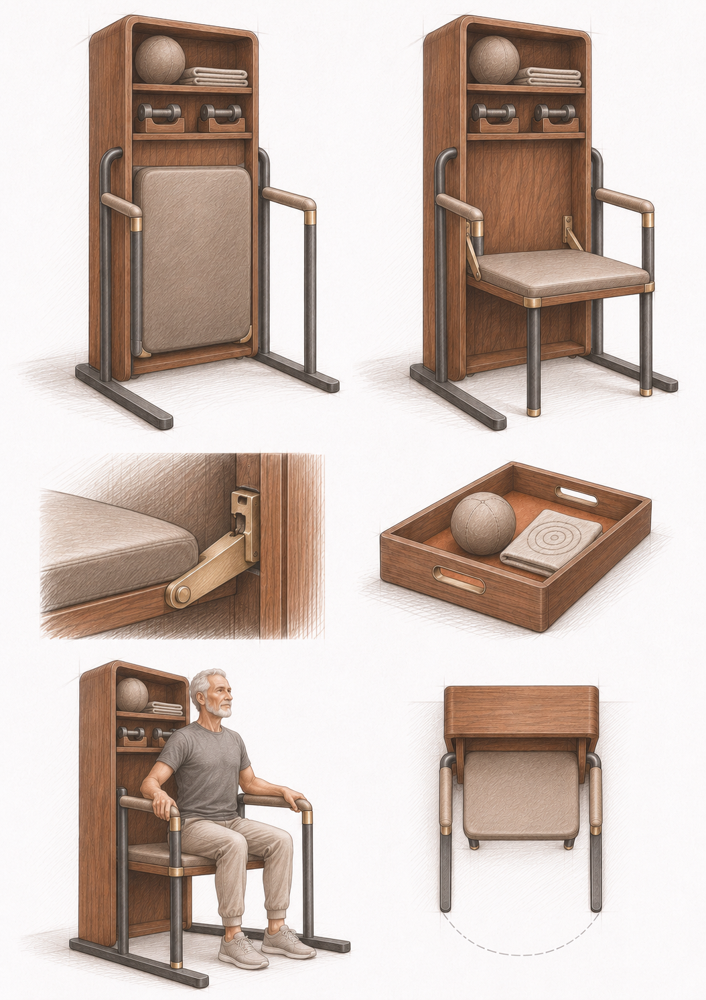
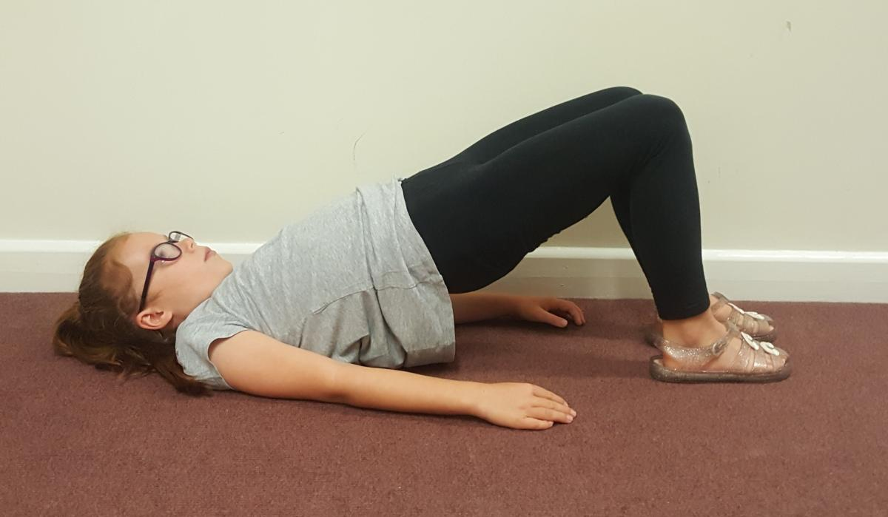
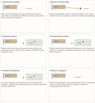
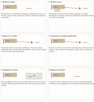
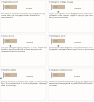
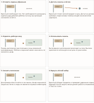
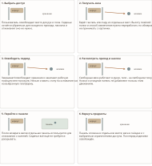
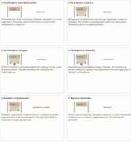
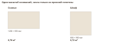
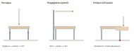

Concepts_functions_scenarios_A4_2026-11-25Два варианта: что и зачем мы проектируем
Подробное объяснение текущих эскизов скамьи и напольного шкафа.
Главный вывод
Оба варианта объединяют хранение, отдельную напольную панель, сиденье и поддержку рукой. Они не создают собственное силовое сопротивление: в выбранных движениях работают вес тела или отдельные гантели. Корпус нужен прежде всего для подготовки, порядка и части опор. Это важно для честного обоснования диплома.
| Вариант | Основная идея | Слабое место |
|---|
| Скамья | Постоянное сиденье; минимум подготовки; низкое распределённое хранение. Первый кандидат для проверки функций. | Занимает пол постоянно. Низкий тяжёлый ящик и боковой хват требуют проверки доступа и устойчивости. |
| Напольный шкаф | Вертикальное хранение; сиденье раскрывается только при необходимости; отдельное основание без сверления. | Механизм, ножки и боковые опоры усложняют подготовку. Поддержка стоя и поворот сидя не решены эскизом. |
Что изменилось после подробной проверки
Ранее красивые рисунки могли создать впечатление завершённости. Здесь это исправлено: боковые подлокотники не признаны готовым хватом стоя; способность шкафа экономить пол не принята без сравнения основания; открытая полка весов не названа защитой от ребёнка.
Порядок чтения: основания и части - стр. 2–8; упражнения - 9–13; шесть сценариев - 14–19; смена пользователей, материалы и конструкция - 20–26; выбор и проверка - 27–30; источники - 31–32. Сценарии показывают будущую проверяемую схему, а не разрешение нагружать эскизный образец.
Основания: требование, факт и гипотеза
Универсальность означает одно изделие по очереди, но не одну настройку для всех.
| Основание | Что действительно задано | Чего из него не следует |
|---|
| Автор | Три группы: дети, молодые взрослые и пожилые; одно изделие; без сверления. | Любой возраст, самостоятельная подготовка всеми людьми, одинаковая высота и гарантированная пригодность. |
| Автор | Дерево, минималистичный мебельный образ, ориентир BORK; карандашная подача. | Только массив ореха, обязательная натуральная кожа, высокая цена или выбранная несущая схема. |
| Преподаватель | Идти от упражнений к полезным функциям; затем к их компоновке. | Копировать все возможности аналогов, обязательно добавлять трос, экран или наклонную спинку. |
| Источники движений | Есть конкретные положения тела и опоры в выбранных примерах. | Готовая индивидуальная программа, лечебный эффект нашего изделия или возраст допуска. |
| Помощник | Скамья - первый кандидат; шкаф - сравнительный. Фанера/шпон, рама и сменные контакты предложены для проверки. | Решение автора о форме, размеры по эргономике, расчётные нагрузки или доказанный ресурс. |
Как принимается каждая деталь
Цепочка одна: движение или бытовой шаг → нужный контакт/доступ → функция → деталь → способ проверки. Если движение не требует детали, она должна оправдать себя в хранении, подготовке, обслуживании или образе. Иначе её можно убрать.
Основание консультации: meetings/raw/teacher-discussion-03.md, 09:18–09:59 - отбор полезного через упражнения; 10:53–11:56 - вывод габаритов из движения и опор. Указания автора о трёх группах, установке без сверления и деревянном мебельном образе сохранены в отдельном журнале решений. Буквенные обозначения упражнений на листах не используются.
Скамья: читаем рисунок по частям
Сначала ищем рабочие части; затем отделяем их от внешней оболочки.

Верхняя поверхность - сиденье. Тёплый фасад под ним - хранение. Высокая рамка у короткой стороны - отдельный хват. Низкие полозья - предполагаемая связь с полом. Панель вынута и используется отдельно.
Сиденье постоянно готово: не нужно двигать веса и открывать крышку перед посадкой. Это уменьшает число операций именно в сценарии пожилого пользователя. Для ребёнка корпус остаётся организатором, а не местом выполнения упражнения.
Нельзя читать картинку как доказательство нагрузки. На ней не определены сечение рамы, способ соединения хвата, толщина основания, крепление накладки и размер опорного контура.
Найти на рисунке
сиденье сверху; мягкая сменная накладка; жёсткое основание сиденья; боковой фиксированный хват; силовой каркас и база; два независимых отсека; гнёзда и ограничение доступа; отдельное место панели.
Рисунок сохранён без изменения. Страница с карандашными видами создана ИИ ранее; здесь она служит визуальным указателем частей. Подробные аргументы и проверки каждой части - на следующем листе.
Скамья: назначение каждой части
Если часть убрать, должно быть понятно, какую задачу мы потеряем.
| Часть | За что отвечает | Проверка / ограничение |
|---|
| Сиденье сверху | Неподвижная опора таза для вставания и поворота сидя. | Высота/глубина по человеку; слишком мягкая или скользкая накладка может ухудшить переход. |
| Мягкая сменная накладка | Отделяет контакт тела от жёсткого основания; позволяет обслужить изнашиваемую часть. | Не превращать её в толстую подушку без проверки упругости. Чехол и крепёж должны быть доступны. |
| Жёсткое основание сиденья | Передаёт усилие от накладки в раму. | Декоративный фасад не должен случайно стать единственной силовой деталью. |
| Боковой фиксированный хват | Предлагаемая поддержка стоя при подъёме пяток. | Высота и место постановки стоп не подтверждены; не считать его двумя подлокотниками для вставания. |
| Силовой каркас и база | Связывают сиденье, хват и пол. | Компактные полозья рисунка не рассчитаны; проверить пустой корпус и разные направления усилия. |
| Два независимых отсека | Один предмет достаётся без подъёма всего сиденья. | Открытый ящик выходит в проход; масса и длина вылета меняют устойчивость. |
| Гнёзда и ограничение доступа | Задают место веса и разделяют тяжёлое/лёгкое хранение. | Гнездо не является замком. Способ ограничения доступа ребёнка пока не выбран. |
| Отдельное место панели | Позволяет вынуть покрытие без перекладывания гантелей. | Сложенная панель, пальцы и очистка должны поместиться; форма слота на рисунке этого не доказывает. |
Логика переноса из аналогов: отдельные места предметов и независимый доступ изучались по Technogym, Solo и StepBox. Свой хват для выбранной поддержки рукой не скопирован из них: это самостоятельная проектная задача.
Скамья: как работают четыре функции
Подготовка, действие и возвращение предметов важнее числа красивых ячеек.
Сиденье и хват решают разные задачи
Сиденье принимает таз при посадке и начале вставания; хват - усилие кисти в отдельном действии стоя. Высокая рамка у одного торца не обеспечивает симметричную помощь двумя руками. Если конкретному человеку нужна такая помощь, это отдельное условие компоновки, а не скрытое свойство рисунка.
Хранение не должно мешать движению
Взрослый выбирает вес, вынимает его и закрывает отсек до приседа или наклона. Положение для извлечения и положение для упражнения различаются. Нельзя выполнять наклон головой к открытому ящику или ставить стопы между его направляющими.
Напольная панель самостоятельна
Её достают через отдельное место и укладывают вне корпуса. Так ребёнок и молодой взрослый используют подходящую плоскую поверхность, а не высокую скамью. Шов/складку и мягкость подбирают по контактам ладони, колена и спины; универсальная мягкость для любой стойки не задана.
| Причина решения | Польза | Цена решения |
|---|
| Постоянное сиденье | Нет шарнира, ножек и проверки раскрытия перед каждым использованием. | Длина и база остаются в комнате постоянно. |
| Низкое раздельное хранение | Вес не нужно доставать из-под всего верхнего модуля. | Нужно наклоняться; ход ящика занимает подход и меняет нагрузочный случай. |
| Отдельный слот панели | Не трогаем тяжёлые предметы при подготовке детского занятия. | Нужны реальный объём сложения и доступ для пальцев. |
Шкаф: читаем два состояния
Сиденье убрано - это другое состояние, но не исчезновение основания.

Вертикальный корпус - хранение. Прямоугольная мягкая панель спереди - сиденье в убранном состоянии. В открытом виде под ним две передние ножки. Боковые рамки на текущем рисунке относятся прежде всего к сидящему человеку.
Шкаф интересен, если нужно убирать сиденье между занятиями. При этом для трёх детских и трёх основных действий молодых сам механизм не требуется: достаточно извлечь панель или веса.
В текущем рисунке остались вопросы: подлокотники могут ограничить локти, высокий хват стоя отсутствует как отдельное проверенное место, а верхняя открытая полка не решает семейный доступ к тяжёлым предметам.
Найти на рисунке
вертикальный корпус; откидное сиденье; шарнир сиденья; две передние ножки; механический фиксатор; боковые опоры; самостоятельная рама; выступающее основание; ячейки и место панели.
Рисунок сохранён без изменения. Страница с карандашными видами создана ИИ ранее; здесь она служит визуальным указателем частей. Подробные аргументы и проверки каждой части - на следующем листе.
Шкаф: назначение каждой части
Трансформация добавляет действия и узлы - их пользу нужно доказать.
| Часть | За что отвечает | Проверка / ограничение |
|---|
| Вертикальный корпус | Организует предметы по высоте и формирует мебельный образ. | Расположение тяжёлых вещей высоко не обосновано. Их высоту и защиту требуется пересмотреть. |
| Откидное сиденье | Даёт опору для сидячих действий только после раскрытия и фиксации. | Детям и молодым для основных напольных действий его раскрывать не нужно. |
| Шарнир сиденья | Обеспечивает движение между состояниями. | Шарнир сам по себе не фиксирует изделие в рабочем положении и не доказывает ресурс. |
| Две передние ножки | Предлагают прямой путь нагрузки передней части сиденья в пол. | Должны развернуться и удерживаться в рабочем положении; зазор, перекос и ошибочная установка ещё не решены. |
| Механический фиксатор | Должен подтверждать выбранное рабочее/убранное состояние. | Нужна различимая фиксация и защита от случайного изменения; нарисованный кронштейн не готовая спецификация. |
| Боковые опоры | На эскизе - места для рук сидящего человека. | Могут мешать повороту корпуса. Их высота не доказана для поддержки стоя. |
| Самостоятельная рама | Связывает хват, шарнир, ножки и основание без рабочей опоры на стену. | Не рассчитывать на стену или хранящиеся веса как на обязательный противовес. |
| Выступающее основание | Сохраняет опорный контур в обоих состояниях. | Его габарит остаётся на полу и может пересекать подход; это часть сравнения компактности. |
| Ячейки и место панели | Дают доступ к нужному набору без полного раскрытия изделия. | Открытая полка и декоративный поднос не обеспечивают ограничение доступа к весам. |
Шкаф: логика раскрытия и фиксации
Предлагаемый рабочий цикл, который ещё нужно разработать на макете.
| Состояние | Действие и ответственный | Условие перехода |
|---|
| Хранение | Панель и веса доступны через отдельные места; сиденье удерживается убранным. | Сиденье не падает при обычном извлечении предмета. Способ удержания ещё выбрать. |
| Подготовка сиденья | Пользователь, либо помощник при необходимости, освобождает место и переводит сиденье вниз. | Хват для руки не совпадает с зоной шарнира; пальцы не проходят через закрывающийся зазор. |
| Установка опор | Выводит обе ножки и подтверждает фиксацию, не нагружая непроверенную конструкцию телом. | Положение каждой ножки и фиксатора можно различить; узел не опирается только на внимание пользователя. |
| Использование | Сиденье, рама и ножки работают как выбранная проверенная схема. | Подход спереди открыт, опоры стоят на полу; приборы и веса убраны из движения стоп. |
| Возврат | После выхода человека переводит ножки и сиденье в убранное положение. | Рабочая и убранная фиксации различны и понятны. Полозья основания остаются на полу. |
Когда раскрытие лишнее
Для детских движений на полу и приседа/наклона с гантелями сиденье держим убранным. Иначе увеличиваем подготовку и вводим выступающие детали без пользы для действия.
Почему пока нельзя обещать самостоятельность
Не известны масса сиденья, усилие перевода, способ удержания, зрительная различимость фиксации и способность выбранного человека выполнить эти действия. Не назначаем пружину или газлифт заранее: сначала измеряем необходимое усилие и проверяем, нужен ли механизм помощи.
Девять основных действий: роль изделия
Обоснована потребность в функции; пригодность собственного образца ещё не подтверждена.
| Действие | Скамья | Шкаф | Ключевое условие |
|---|
| Дети: рука и нога | Отдельная панель; корпус вне вытягивания. | Та же панель, сиденье убрано. | Корпус не является опорой тела. |
| Дети: дотянуться | Панель, мягкий предмет, отдельная цель. | То же; доступ к лёгкому без раскрытия. | Цель не обязана быть на полке. |
| Дети: поднять таз | Контакт с панелью, не с сиденьем. | То же, база вне движения. | Проверить переход на пол и длину панели. |
| Молодые: отжимание с коленей | Панель, свободные локти и голова. | Панель; сиденье убрано. | Высокое отжимание - другое действие. |
| Молодые: присед с гантелью | Хранение и возврат веса, свободный пол. | То же, отдельный доступ к весам. | Во время движения отсек закрыт. |
| Молодые: наклон с гантелями | Хранение пары и свободная траектория. | То же; закрытая трансформация. | Не используем мебель как опору корпуса. |
| Пожилые: сесть и встать | Постоянное сиденье после подбора посадки. | Сиденье только после раскрытия и проверки. | Ни высота, ни пригодность не доказаны. |
| Пожилые: поднять пятки | Предложен отдельный хват у торца. | Боковые опоры сидящего пока не закрывают требование. | Нужны положение стоя, подходящий хват и расчёт. |
| Пожилые: поворот сидя | Свободная часть сиденья вдали от стойки. | Боковые опоры могут мешать: эскиз требует пересмотра. | Проверить колени, локти и диапазон движения. |
Сам корпус непосредственно служит опорой в двух сидячих действиях и может дать фиксированный хват для третьего действия пожилой группы. В остальных шести примерах основная работа происходит на отдельной панели или свободном полу. Это не недостаток, если удобство организации места действительно подтверждено.
Потенциальная совместимость не равна разрешению на нагрузку. Эти девять примеров - сохранённый проектный отбор; новые нагрузки, повторы, медицинские эффекты и возраст допуска здесь не назначаются.
Детские движения: что делает изделие
Показываем исходный пример и требования к предмету, без назначения режима занятий.
Вытянуть руку и противоположную ногу

Нужно: Панель под опорными контактами; место для вытягивания вдоль тела.
Скамья и шкаф хранят панель, но не должны подпирать туловище или заставлять ребёнка залезать на мебель.
Проверить: Измерить крайние положения и место взрослого рядом. Высокий торцевой хват ребёнку для этого действия не требуется.
Дотянуться до мягкого предмета

Нужно: Лёгкий мягкий предмет и переносимая цель; место цели задаёт сценарий.
У обоих вариантов лёгкий отсек отделён от грузов. Постоянная высокая полка не заменяет цель, которую можно поставить перед ребёнком.
Проверить: Проверить расстояние дотягивания, видимость предмета и возвращение без контакта с тяжёлым хранением.
Поднять таз лёжа

Нужно: Панель под спиной и стопами; корпус мебели остаётся в стороне.
В обоих вариантах используется одна отдельная поверхность. Нет оснований добавлять степ, опорную ступень или наклонную спинку.
Проверить: Проверить укладывание, поднимание и стык панели. Источник - детская терапия; это не программа для любого ребёнка.
Фотографии из сохранённых первоисточников; пояснения относятся к изделию. Источники и авторство - стр. 31–32. Условий индивидуального допуска и режима занятий этот лист не назначает.
Молодые: нагрузка в руках, место на полу
Показываем исходный пример и требования к предмету, без назначения режима занятий.
Отжаться с коленей

Нужно: Опора на пол через панель и место для локтей.
В обоих вариантах шкаф/скамья не заменяют пол. Отжимание от высокого сиденья имело бы другую опору и не считается тем же упражнением.
Проверить: Проверить сцепление, складку, траекторию головы и возвращение в стояние; не добавлять упоры для ладоней без отдельной необходимости.
Присесть с гантелью

Нужно: Одна гантель, которую человек удерживает; свободный пол.
Польза обоих корпусов - удобно получить и вернуть предмет. На шкафе отдельно проверить высоту извлечения, на скамье - глубину наклона к отсеку.
Проверить: Измерить место таза и коленей, хват выбранной гантели и закрывание хранения. Источник ACE относит пример к промежуточной сложности.
Наклониться с гантелями

Нужно: Пара гантелей и место движения тела вперёд/назад.
Корпус остаётся вне траектории головы и грузов. Никакой анкер, трос и подпорка груди для исходного действия не нужны.
Проверить: Проверить путь от отсека до рабочей позиции и вынос открытого ящика. Фото и описание имеют разные источники, указанные в реестре.
Фотографии из сохранённых первоисточников; пояснения относятся к изделию. Источники и авторство - стр. 31–32. Условий индивидуального допуска и режима занятий этот лист не назначает.
Пожилые: три разные задачи опоры
Показываем исходный пример и требования к предмету, без назначения режима занятий.
Сесть и встать

Нужно: Подобранное сиденье и свободное пространство перед стопами.
Скамья готова без трансформации. Шкаф требует установки сиденья и обеих ножек. Боковой хват скамьи не равен помощи двумя руками.
Проверить: Проверить посадку, упругость накладки и положение базы. Исходный пример не делает подлокотники обязательным требованием.
Поднять пятки у опоры

Нужно: Отдельная неподвижная поддержка руками в положении стоя.
Скамья предлагает высокий торцевой хват, который ещё надо подобрать. Низкие боковые опоры шкафа нельзя автоматически перенести в этот сценарий.
Проверить: В источнике показаны обе руки на опоре; одноручный контакт эскиза не объявлен равноценным. Нужны подбор хвата, проверка узла и устойчивости.
Повернуть корпус сидя

Нужно: Подходящее сиденье, стопы на полу и свободное движение рук/локтей.
На скамье стойку можно вынести к торцу от места посадки. У шкафа постоянные боковые опоры могут конфликтовать с выбранным действием.
Проверить: NHS рекомендует стул без подлокотников для этой серии. Нужно пересмотреть форму/положение опор или прямо признать ограничение текущего эскиза.
Фотографии из сохранённых первоисточников; пояснения относятся к изделию. Источники и авторство - стр. 31–32. Условий индивидуального допуска и режима занятий этот лист не назначает.
Дополнительные действия: что остаётся резервом
Резерв не превращается в обязательный комплект и не оправдывает любой новый механизм.
| Группа / пример | Что нужно предмету | Что не следует добавлять автоматически |
|---|
| Дети: отталкивание от стены | Отдельная стена и свободное место. | Силовое крепление нашего изделия к стене. |
| Дети: передача мяча на коленях | Панель, лёгкий предмет, место второго участника. | Тяжёлый медицинбол или обязательный высокий столик. |
| Дети: перемещение «зайчиком» | Другое динамическое использование пола. | Прыжки по сиденью. Этот пример в базу не включён. |
| Молодые: тяга гантелей | Пара весов, свободные локти, хранение. | Тросовая станция: источник показывает свободные веса. |
| Молодые: жим вверх | Веса и пространство над/вокруг человека. | Регулируемая спинка без выбора положения тела. |
| Молодые: боковая планка | Панель, контакт предплечья/стоп, место сбоку. | Складной степ или высокая опора. |
| Пожилые: тяга ленты сидя | Сиденье и лента под стопами в прежнем примере. | Анкер в мебели: он не требуется этой версии движения. |
| Пожилые: отжимание от стены | Отдельная пригодная стена и свободный подход. | Разрешение толкать нерассчитанный шкаф. |
| Пожилые: шаг в сторону | Свободная дорожка и подходящая поддержка при необходимости. | Приравнивание ширины корпуса к нужной длине дорожки. |
Резерв взят из прежнего исследования движений. Сначала проверяются девять основных примеров. Для новой версии каждого действия снова задаются человек, контакты, пространство и источник; название упражнения само по себе не назначает деталь.
Скамья: сценарий ребёнка
Будущий бытовой сценарий. Планы условные; это не техника выполнения упражнений.

На плане: синяя точка - человек; коричневая - взрослый рядом с ребёнком. Положение условное.
Роль изделия: Вклад скамьи: отдельный лёгкий набор и место его хранения. Основная работа ребёнка происходит на панели, а не на сиденье.
Условие: Для сценария необходимо реально решить разделение доступа к грузам и проверить панель. Наличие фасада на эскизе этого не подтверждает.
Скамья: сценарий молодого взрослого
Будущий бытовой сценарий. Планы условные; это не техника выполнения упражнений.

На плане: синяя точка - человек; коричневая - взрослый рядом с ребёнком. Положение условное.
Роль изделия: Вклад скамьи: последовательная подготовка и возврат предметов. Наклонная спинка и трос не нужны этим трём основным примерам.
Условие: Сначала проверяются хват готовой гантели, путь извлечения, ход ящика и устойчивость. Массы грузов и время подготовки ещё не измерены.
Скамья: сценарий пожилого пользователя
Будущий бытовой сценарий. Планы условные; это не техника выполнения упражнений.

На плане: синяя точка - человек; коричневая - взрослый рядом с ребёнком. Положение условное.
Роль изделия: Преимущество варианта: сиденье не нужно раскрывать. Ограничение: один боковой хват может не закрыть все потребности поддержки конкретного человека.
Условие: Нагружение человеком не является первой проверкой нового каркаса. На раннем макете исследуются только размеры и доступ; нагрузку допускают после расчёта и стендовой проверки.
Шкаф: сценарий ребёнка
Будущий бытовой сценарий. Планы условные; это не техника выполнения упражнений.

На плане: синяя точка - человек; коричневая - взрослый рядом с ребёнком. Положение условное.
Роль изделия: Шкаф здесь выполняет роль организатора. Детский сценарий сам по себе не оправдывает механизм складывания сиденья.
Условие: На текущем рисунке тяжёлые вещи открыты. Для семейного сценария требуется отдельное решение доступа; высота не считается достаточной защитой.
Шкаф: сценарий молодого взрослого
Будущий бытовой сценарий. Планы условные; это не техника выполнения упражнений.

На плане: синяя точка - человек; коричневая - взрослый рядом с ребёнком. Положение условное.
Роль изделия: Компактность в этом сценарии зависит от основания и реальной зоны человека, а не только от того, что сиденье поднято.
Условие: Раскладка тяжёлого хранения пока не принята. Если перед гантелью надо раскрывать сиденье или наклоняться через него, обещанный простой доступ не выполняется.
Шкаф: сценарий пожилого пользователя
Будущий бытовой сценарий. Планы условные; это не техника выполнения упражнений.

На плане: синяя точка - человек; коричневая - взрослый рядом с ребёнком. Положение условное.
Роль изделия: Шкаф сейчас хуже завершён функционально: к механизму добавляются два открытых вопроса - поворот сидя и поддержка стоя.
Условие: В этом сценарии нет шага «подняться на носки за низкий подлокотник». Сначала требуется подходящая опора и пересмотр конфликтующей геометрии.
Одна семья: передача между пользователями
Три группы по очереди не означают, что изделие перестраивается одинаково каждый раз.
| Переход | Что вернуть | Что подготовить следующему |
|---|
| Ребёнок → молодой взрослый | Мягкий предмет и цель убраны; панель очищена/осмотрена по выбранному материалу. | Взрослый доступ к весам; свободная траектория. Панель остаётся только для соответствующего действия. |
| Молодой → пожилой | Гантели в гнёздах, тяжёлое хранение закрыто выбранным способом; ящик не выступает. | Пол перед стопами свободен. У шкафа нужны раскрытие/ножки; у скамьи проверяется готовая посадка. |
| Пожилой → ребёнок | Человек полностью вышел; не оставлены незапертые подвижные части. | У шкафа сиденье удерживается убранным; лёгкий набор доступен взрослому независимо от весов. |
Ответственность за подготовку
Детский сценарий предполагает взрослого. Для пожилого пользователя помощь не назначена всем и не исключена всем: самостоятельность проверяется по реальным действиям, усилиям, видимости и способности достать предмет. Взрослый пользователь не должен переносить весь корпус ради доступа к одному весу.
Состояние должно быть понятным
По внешнему виду и доступной проверке должно быть понятно: ящик закрыт, сиденье удерживается, ножки стоят как нужно, предмет возвращён в своё место. Это задание на форму и узлы; сейчас мы не утверждаем наличие готового датчика, замка или автоматически надёжного щелчка.
Время подготовки и число ошибок пока не измерены. В наблюдении фиксировать действия каждого человека отдельно: сколько операций, где требуется вторая рука или помощник, что оказывается в проходе. Не подменять такие данные впечатлением «выглядит удобно».
Инвентарь: состав и интерфейсы
Сначала выбранные предметы и их реальные размеры, затем форма ячеек.
| Предмет / узел | Зачем нужен | Что измерить / решить |
|---|
| Гантель или пара | Присед и наклон молодых; резерв - тяга и жим. | Тип/масса по будущему отбору пользователя, максимальный габарит, хват, путь извлечения и возврата. |
| Гнездо веса | Предмет возвращается в понятное положение и не перекатывается. | Реальный контур веса, просвет пальцев, вкладыш, фиксация при переносе. Гнездо и защита доступа - разные задачи. |
| Мягкий предмет и цель | Детский сценарий дотягивания и перенос предмета. | Лёгкость, размер по хвату, очистка; цель переносимая, а не обязательно часть высокой мебели. |
| Панель | Контакты тела в детских/молодёжных примерах. | Положение тела, толщина, упругость, сложенный объём, направления швов, сцепление на выбранном полу. |
| Лента в резерве | Прежняя тяга сидя с лентой под стопами. | Выбранная лента, подготовка, свободная траектория; анкер в корпусе этим примером не обоснован. |
| Деревянная оболочка хвата | Предлагаемая тёплая контактная поверхность и единый образ. | Несущий сердечник, удержание оболочки, финиш, стык и возможность замены. Изображение не подтверждает прочность. |
Для первого макета можно взять готовые гантели и проектировать вокруг измеренного набора. Самостоятельно изготовленные грузы не являются необходимым результатом текущего этапа. Их деревянные рукояти на рисунке - поиск формы, а не разрешение переделывать готовое силовое изделие.
Не включаем предмет только потому, что он красив в коллекции BORK: скакалка, ролик и дополнительные упоры не выведены из девяти основных действий.
Материалы: функция важнее дорогого названия
Древесина задаёт выбранный образ; конструктивное качество нужно проверить отдельно.
| Часть | Предлагаемое направление | Аргумент и проверка |
|---|
| Корпус | Фанера с натуральным шпоном ореха; массив локально для сравнения. | Рисунок дерева и сменные панели. Сравнить кромку, влажную очистку, крепёж, ремонт и расчёт изготовления. |
| Рама | Стальная силовая схема с матовым покрытием. | Понятный путь усилий. Сечение/швы не выбраны; проверить геометрию, ресурс и доступ к соединениям. |
| Сиденье | Основание + упругая пена + сменный чехол. | Три разные функции: несущая, контактная и обслуживаемая. Плотность пены сама по себе не выбирает комфорт. |
| Обивка | Сравнение кожи, контрактной ткани и покрытий на образцах. | Кожа - эстетический кандидат, не автоматический победитель по очистке, скольжению и ресурсу. |
| Панель | Гибкая закрытоячеистая пена с проверенной поверхностью. | Напольное покрытие и мебельная накладка имеют разные контакты. Не заменяем панель жёстким деревянным щитом. |
| Вкладыши / подпятники | Сменные элементы конкретной марки после сравнения. | Проверить удержание предмета, след на полу, сдвиг и замену изношенного элемента. |
Что именно заимствовано из BORK
Изучена визуальная культура: тёплая древесина, ограниченная палитра, небольшие металлические акценты, единство хранения и инвентаря, крупный план отделки. Не перенесены логотип, точная форма коллекции, комплект всех аксессуаров и рекламное обещание ресурса.
Полная стоимость неизвестна. Её формируют не только лист и профиль, но и узлы, раскрой, сварка, отделка, обивка, вкладыши, сборка и проверки. Численного сравнения цены двух готовых изделий пока нет.
Пространство: корпус не равен зоне занятия
Сравнение прежних пробных оснований, а не размеров утверждённого изделия.

Если оставить прежние пробные базы: скамья 1200×650 мм занимает прямоугольный габарит 0,78 м²; шкаф 800×900 мм - 0,72 м². Разница 0,06 м², то есть около 7,7% от базы скамьи. Эти числа показывают только габарит основания, не реальное удобство и не экономию всей рабочей зоны.
Вертикальный корпус может выглядеть компактнее, но полозья шкафа остаются и после поднятия сиденья. Их нельзя считать свободным проходом только потому, что между ними видно пол.
Полная зона - объединение корпуса, раскрытых частей, вылета ящика, положения человека во всех фазах, подхода, перехода на пол и места помощника. Слепо складывать их площади нельзя: часть зон используется по очереди, часть конфликтует.
Для реальной проверки нужны обмеры людей и комнаты. Длина вытягивания, вынос таза/головы, место локтя и путь открытия - отдельные параметры. Условная комната 3×3 м и числа эскиза не являются нормативом или доказанным минимумом.
Силовая работа: куда передаётся усилие
Поясняем нагрузочные случаи, но не объявляем выполненным инженерный расчёт.

Посадка: тело → накладка → основание сиденья → рама → опоры → пол. У шкафа добавляются шарнир/узел сиденья и передние ножки. Их распределение нагрузки зависит от выбранной геометрии и соединений.
Поддержка рукой: кисть → несущий хват → стойка/соединение → база → пол. Деревянная оболочка не должна случайно стать единственным несущим элементом. Высокий хват и боковая нагрузка создают отдельный случай опрокидывания.
Извлечение груза: открытый ящик выносит часть массы вперёд. Пустое, частично заполненное и полное изделие, а также открывание одного/нескольких отсеков - разные случаи. Нельзя рассчитывать устойчивость только с гантелями внутри.
Из основ статики следует проверять равновесие сил и моментов; устойчивость не сводится к фразе «тяжёлое значит надёжное». Дополнительно важны скольжение, контакт опор и повторные действия. Ни коэффициенты запаса, ни допустимое усилие, ни сечение здесь не назначены.
Отказы и неудобства: что может пойти не так
Это проектный разбор возможных ошибок, а не статистика происшествий.
| Ситуация | Причина / последствие | Изменение и проверка |
|---|
| Опора рукой сдвигает корпус | Неподходящая база, пол или направление усилия. | Сначала расчёт нагрузочных случаев и стенд; затем решение формы/подпятников. Не полагаться на веса в хранении. |
| Тяжёлый ящик открыт | Груз вынесен, проход занят. | Ограничить ход/сценарий открытия, проверить устойчивость и при необходимости пересмотреть тип хранения. |
| Ребёнок берёт груз | Открытая полка или простая ручка доступны. | Отделить лёгкий набор; выбрать проверяемое ограничение доступа. Высота и гнездо не равны защите. |
| Ножка не установлена | Неясное положение или сложная подготовка. | Пересмотреть кинематику/фиксацию и различимость. Не возлагать всё на подпись «проверьте». |
| Стопа задевает полоз | Основание пересекает подход. | Проверить реальный шаг, посадку и выход; изменить геометрию, а не только скруглить торец. |
| Локоть упирается в рамку | Опора удобна для рук в покое, но мешает повороту. | Развести место хвата и движения или признать, что текущий вариант не закрывает исходное действие. |
| Панель скользит / складка мешает | Не выбран материал и раскладка. | Образец на конкретном полу, карта контактов и очистка; не переносить обещание бренда на свою панель. |
| Нельзя обслужить накладку | Крепёж спрятан; чехол не снимается. | Отделить сменный контакт от силового узла, обеспечить доступ инструментом. |
Список не претендует на формальную сертификационную оценку. В нём нет вероятностей и рейтингов тяжести: таких данных пока нет. Здесь он служит заданием на изменение эскиза и будущую проверку.
Почему одни детали оставлены, а другие нет
Многофункциональность оценивается через выбранные действия и бытовой цикл.
| Решение | Основание | Статус |
|---|
| Отдельная панель | Нужна в четырёх основных напольных примерах и хранится вне грузов. | Потребность обоснована; исполнение проверяется. |
| Неподвижное сиденье | Два основных действия пожилых. | Потребность обоснована; размеры и упругость не выбраны. |
| Отдельный хват стоя | Поддержка в третьем пожилом примере. | Потребность обоснована; расположение и прочность обоих вариантов открыты. |
| Раздельные места | Взять/вернуть лёгкое и тяжёлое без перекладывания всего. | Проектное решение; удобство и доступ проверяются наблюдением. |
| Складное сиденье шкафа | Убрать объём сиденья между использованиями. | Сравнительная гипотеза; должна оправдать подготовку и оставшееся основание. |
| Наклонная спинка | В девяти основных примерах не обязательна. | Не добавляется без нового выбранного действия. |
| Трос / анкер / привод | Не нужны для текущих движений с отдельной гантелью и для прежней ленты под стопами. | Не включены в базу. |
| Экран / приложение | Не отвечают выявленным контактам, опорам и хранению. | Не включены в базу; информационную задачу можно проверить простой карточкой. |
| Колёса | Могут помочь перемещению, но меняют неподвижную опору. | Резерв после определения массы и сценария переноса, не обязательная деталь. |
| Дерево и металлический акцент | Прямое эстетическое предпочтение автора. | Развивать без подмены несущей функции декором. |
Сравнение: какой вариант разумнее развивать
Оценка качественная. Наблюдений, весовых коэффициентов и итоговых баллов пока нет.
| Критерий | Скамья | Напольный шкаф |
|---|
| Основные действия детей/молодых | Панель/веса отдельно; корпус не требует раскрытия. | Те же действия; сиденье тоже можно не раскрывать. |
| Подготовка сиденья | Постоянная поверхность, меньше операций. | Нужны сиденье, две ножки и фиксация. |
| Поворот сидя | Можно проверить свободный участок вдали от торцевого хвата. | Постоянные боковые опоры создают явный конфликт. |
| Поддержка стоя | Предложен отдельный высокий хват; требуется расчёт и посадка. | Отдельное пригодное место пока не определено. |
| Рабочая площадь | Постоянная база; ящик временно увеличивает зону. | Основание остаётся, даже когда сиденье убрано. |
| Хранение | Низкий доступ может требовать наклона. | Высокий доступ может требовать подъёма/удержания груза; расположение нужно пересмотреть. |
| Изготовление / сервис | Меньше подвижных силовых узлов; цена пока неизвестна. | Больше шарниров, фиксаций и операций сборки; численная разница цены неизвестна. |
| Мебельный образ | Горизонтальная мебельная вещь, дерево и накладка. | Вертикальный интерьерный предмет; большую высоту нужно оправдать. |
Вывод помощника
Скамья предпочтительнее как первый проверочный макет: проще разделить исследование посадки, хвата, панели и хранения. Это выбор порядка эксперимента, а не окончательное решение автора. Шкаф имеет смысл продолжать, если натурная проверка покажет реальный выигрыш хранения/компактности и решит конфликт опор.
Оба варианта нужно сравнить с простым набором «панель + готовые веса + подобранное устойчивое сиденье/поддержка». Преимущество единого изделия должно проявиться в порядке, доступе, подготовке и удобстве помещения; новых тренировочных возможностей корпус автоматически не добавляет.
Как проверить идеи без выдуманных результатов
Сначала компоновка и инженерная готовность, затем использование под выбранной нагрузкой.
| Этап | Что делаем | Что фиксируем |
|---|
| Размерная модель без нагрузки | Полноразмерно обозначаем корпус, базу, раскрытие, ящик и панель. Для посадки на раннем этапе используем отдельно проверенную опору. | Подход/выход, движение коленей/локтей, вынос головы, место помощника. Не нагружаем непроверенный каркас. |
| Доступ и подготовка | С готовым измеренным инвентарём разбираем взять/вернуть; у шкафа - последовательность трансформации. | Операции, ошибки, необходимость второй руки/помощника, усилие и различимость состояния. Время измеряем, не назначаем. |
| Расчёт и стенд | Определяем случаи и параметры нагрузки с компетентным конструктором; проверяем выбранные узлы до использования человеком. | Устойчивость пустого/загруженного, открытое хранение, сиденье/хват, подвижные части, дефекты и критерий остановки. |
| Материальные образцы | Сравниваем кромку дерева, шов, хват, обивку и панель после выбранной очистки. | Контакт, скольжение, изменение поверхности, ремонт и цена изготовления конкретного образца. |
| Проверка сценариев | После готовности конструкции наблюдаем подготовку и действия выбранных представителей групп. | Соответствие нуждам конкретного человека; не распространяем один опыт автоматически на все возраста. |
Критерий продолжения шкафа: он даёт измеримую пользу именно этой семье, не требует лишнего раскрытия и не блокирует исходные движения. Критерий изменения скамьи: ящик/хват/база мешают доступу либо не проходят расчёт; тогда меняется схема, а не только отделка.
Какие приёмы пришли из аналогов
Заимствуется полезный принцип; пригодность чужого предмета не переносится целиком.
| Аналоги | Полезный приём | Граница переноса |
|---|
| Technogym / Solo | Предмет имеет определённое место; можно сравнить подход к отдельной гантели. | Не доказывают удобство нашего низкого ящика или пригодность высоты сиденья. |
| NOHRD StepBox | Отделение контактной части и хранения; закрытый мебельный вид. | Жёсткий степ не заменяет мягкую панель для выбранных движений на полу. |
| Wall Compact / Ottagono | Распределение вещей по высоте и визуальная организация фасада. | Настенный силовой узел не подходит условию без сверления; высота не равна доступности. |
| SANA / AT LEAST | Мебельная пластика и видимая древесина; различение частей. | Внешний вид не доказывает ресурс, силовую схему или удобство любой посадки. |
| KILO / Kenko | Отдельный предмет и характер контакта кисти. | Декоративная форма не выбирает массу, диаметр хвата и необходимость полного набора. |
| BORK | Материал, палитра, организация хранения и аккуратный крупный план детали. | Не копируем логотип и весь ассортимент; качество своего узла подтверждаем проверкой. |
| Speediance / Tonal / PENT | Можно изучать понятность управления и отделение рабочих частей. | Привод, экран и пружинная каретка не обоснованы текущим минимумом. |
Обоснование собственной опоры для рук идёт от выбранного действия пожилого пользователя, а не от фотографии кольца ленты, тросовой ручки или транспортной рукоятки. Эти узлы имеют другую задачу.
Уточнение задания на следующий эскиз
Не добавлять новый функционал, пока не решены конфликты существующего.
| Оставить в разработке | Что именно показать следующим | Как поймём, что стало понятнее |
|---|
| Панель и отдельное хранение | Реальный сложенный объём, направление швов и извлечение без весов. | Есть место пальцам; контакты тела не приходятся на неудобную складку. |
| Сиденье под человека | Посадка со стопами и выход с показом коленей/локтей. | Габарит выведен из проверяемой позы, а не взят у красивого аналога. |
| Отдельный хват стоя | Положение тела, высота/обхват и путь усилия в базу. | Видно, чем он отличается от подлокотника и почему не сдвигает корпус после расчёта. |
| Тяжёлое / лёгкое | Разделённый доступ, положение весов и закрытое рабочее состояние. | Ребёнок не получает доступ к грузу через подготовку своего набора; решение надо проверить. |
| Шкаф как сравнение | Пересмотр боковых опор, тяжёлого хранения и фиксации ножек. | Есть ответ на поворот сидя, поддержку стоя и выигрыш относительно оставшейся базы. |
Конкретные варианты исправления
| Следующий эскиз | Что решает | Какой компромисс проверить |
|---|
| Скамья: стационарные гнёзда за отдельной дверцей вместо тяжёлого выдвижного подноса. | Весь запас весов не выносится вперёд вместе с ящиком. | Наклон к низкому хранению остаётся; створка тоже может занимать подход. Сравнить оба доступа. |
| Шкаф: свободные бока сиденья и отдельный высокий хват снаружи зоны локтей. | Разводит поворот сидя и поддержку стоя. Не требует считать подлокотник универсальной опорой. | Может увеличить габарит базы; новая стойка требует расчёта. Потребность в помощи при посадке проверяется отдельно. |
| Шкаф: пересмотр уровня тяжёлых гнёзд и отдельного закрывания. | Не принимает высокую открытую полку как готовое семейное решение. | Низкое хранение увеличивает наклон; нужен выбор по пользователю и проверка доступа ребёнка. |
Три ближайших результата
1. Выбор компоновки для первого макета и перечня спорных деталей. 2. Полноразмерная размерная проверка посадки, хвата, доступа и пространства. 3. Согласованные нагрузочные случаи, образцы материалов и предложения изготовления. Сроки не назначены.
Принятых автором новых размеров, возрастных границ и нагрузок в этом документе нет. Деревянный мебельный образ сохраняется как предпочтение, но не заменяет функциональное доказательство.
Происхождение визуалов и пределы результата
Редактируемые материалы, реальные исходники и собственные проектные выводы.
Solo Signature Storage Bench (Adjustable)
Ранее сохранённый разбор аналогов 23–25.11.2026; здесь используется принцип, без обновления цен.
Technogym Bench: фирменный каталог, 16 страниц
Ранее сохранённый разбор аналогов 23–25.11.2026; здесь используется принцип, без обновления цен.
NOHRD StepBox: описание и технические данные
Ранее сохранённый разбор аналогов 23–25.11.2026; здесь используется принцип, без обновления цен.
NOHRD Wall Compact: размеры и инструкция
Ранее сохранённый разбор аналогов 23–25.11.2026; здесь используется принцип, без обновления цен.
Cassina Ottagono: официальный лист продукта
Ранее сохранённый разбор аналогов 23–25.11.2026; здесь используется принцип, без обновления цен.
SANA: BeOak by Javorina и Tomas Kral
Ранее сохранённый разбор аналогов 23–25.11.2026; здесь используется принцип, без обновления цен.
AT LEAST Home Workout Bench: Red Dot Concept 2024
Ранее сохранённый разбор аналогов 23–25.11.2026; здесь используется принцип, без обновления цен.
KILO: FAQ бренда и сохранённый ассортимент
Ранее сохранённый разбор аналогов 23–25.11.2026; здесь используется принцип, без обновления цен.
Kenko: каталог, Aerobic Dumbbells, печатная стр. 9
Ранее сохранённый разбор аналогов 23–25.11.2026; здесь используется принцип, без обновления цен.
BORK HS844: официальная коллекция
Фотографии и страница сохранены 25.11.2026 в предыдущем этапе. Повторный запрос этого этапа дал тайм-аут; новых характеристик не заявлено.
Карандашные изображения: design/pencil-sketches-2026-11-25, встроенный image_gen, выбранные версии предыдущего этапа. Они не изменены и не считаются измеренными чертежами.
Фотографии девяти движений: сохранённые оригиналы и контрольные суммы из research/analogs/visual-brief-2026-11-25/body-photo-sources.json. Фото наклона - Kathryn Alexander / Becca Ewing; описание движения - NASM.
Шесть сценарных схем, сравнение баз и силовые схемы созданы как редактируемые векторные пояснения. Схемы условные, не моделируют комнату и не задают размеры человека.
Результат - подробное проектное обоснование и план проверок. Наблюдения пользователей, нагрузки, стоимость, срок службы, возраст допуска и пригодность конкретному человеку ещё не получены.